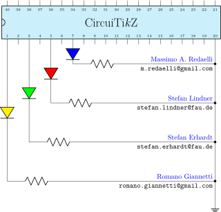
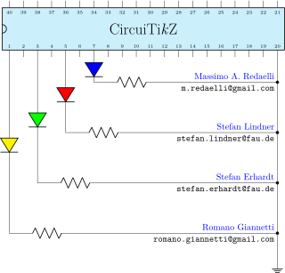

\(\newcommand{\footnotename}{footnote}\)
\(\def \LWRfootnote {1}\)
\(\newcommand {\footnote }[2][\LWRfootnote ]{{}^{\mathrm {#1}}}\)
\(\newcommand {\footnotemark }[1][\LWRfootnote ]{{}^{\mathrm {#1}}}\)
\(\let \LWRorighspace \hspace \)
\(\renewcommand {\hspace }{\ifstar \LWRorighspace \LWRorighspace }\)
\(\newcommand {\TextOrMath }[2]{#2}\)
\(\newcommand {\mathnormal }[1]{{#1}}\)
\(\newcommand \ensuremath [1]{#1}\)
\(\newcommand {\LWRframebox }[2][]{\fbox {#2}} \newcommand {\framebox }[1][]{\LWRframebox } \)
\(\newcommand {\setlength }[2]{}\)
\(\newcommand {\addtolength }[2]{}\)
\(\newcommand {\setcounter }[2]{}\)
\(\newcommand {\addtocounter }[2]{}\)
\(\newcommand {\arabic }[1]{}\)
\(\newcommand {\number }[1]{}\)
\(\newcommand {\noalign }[1]{\text {#1}\notag \\}\)
\(\newcommand {\cline }[1]{}\)
\(\newcommand {\directlua }[1]{\text {(directlua)}}\)
\(\newcommand {\luatexdirectlua }[1]{\text {(directlua)}}\)
\(\newcommand {\protect }{}\)
\(\def \LWRabsorbnumber #1 {}\)
\(\def \LWRabsorbquotenumber "#1 {}\)
\(\newcommand {\LWRabsorboption }[1][]{}\)
\(\newcommand {\LWRabsorbtwooptions }[1][]{\LWRabsorboption }\)
\(\def \mathchar {\ifnextchar "\LWRabsorbquotenumber \LWRabsorbnumber }\)
\(\def \mathcode #1={\mathchar }\)
\(\let \delcode \mathcode \)
\(\let \delimiter \mathchar \)
\(\def \oe {\unicode {x0153}}\)
\(\def \OE {\unicode {x0152}}\)
\(\def \ae {\unicode {x00E6}}\)
\(\def \AE {\unicode {x00C6}}\)
\(\def \aa {\unicode {x00E5}}\)
\(\def \AA {\unicode {x00C5}}\)
\(\def \o {\unicode {x00F8}}\)
\(\def \O {\unicode {x00D8}}\)
\(\def \l {\unicode {x0142}}\)
\(\def \L {\unicode {x0141}}\)
\(\def \ss {\unicode {x00DF}}\)
\(\def \SS {\unicode {x1E9E}}\)
\(\def \dag {\unicode {x2020}}\)
\(\def \ddag {\unicode {x2021}}\)
\(\def \P {\unicode {x00B6}}\)
\(\def \copyright {\unicode {x00A9}}\)
\(\def \pounds {\unicode {x00A3}}\)
\(\let \LWRref \ref \)
\(\renewcommand {\ref }{\ifstar \LWRref \LWRref }\)
\( \newcommand {\multicolumn }[3]{#3}\)
\(\require {textcomp}\)
\(\newcommand {\tothe }[1]{^{#1}}\)
\(\newcommand {\raiseto }[2]{{#2}^{#1}}\)
\(\newcommand {\LWRsiunitxEND }{}\)
\(\def \LWRsiunitxang #1;#2;#3;#4\LWRsiunitxEND {\ifblank {#1}{}{\num {#1}\degree }\ifblank {#2}{}{\num {#2}^{\unicode {x2032}}}\ifblank {#3}{}{\num {#3}^{\unicode {x2033}}}}\)
\(\newcommand {\ang }[2][]{\LWRsiunitxang #2;;;\LWRsiunitxEND }\)
\(\def \LWRsiunitxdistribunit {}\)
\(\newcommand {\LWRsiunitxENDTWO }{}\)
\(\def \LWRsiunitxprintdecimalsubtwo #1,#2,#3\LWRsiunitxENDTWO {\ifblank {#1}{0}{\mathrm {#1}}\ifblank {#2}{}{{\LWRsiunitxdecimal }\mathrm {#2}}}\)
\(\def \LWRsiunitxprintdecimalsub #1.#2.#3\LWRsiunitxEND {\LWRsiunitxprintdecimalsubtwo #1,,\LWRsiunitxENDTWO \ifblank {#2}{}{{\LWRsiunitxdecimal }\LWRsiunitxprintdecimalsubtwo #2,,\LWRsiunitxENDTWO }}\)
\(\newcommand {\LWRsiunitxprintdecimal }[1]{\LWRsiunitxprintdecimalsub #1...\LWRsiunitxEND }\)
\(\def \LWRsiunitxnumplus #1+#2+#3\LWRsiunitxEND {\ifblank {#2}{\LWRsiunitxprintdecimal {#1}}{\ifblank {#1}{\LWRsiunitxprintdecimal {#2}}{\LWRsiunitxprintdecimal {#1}\unicode {x02B}\LWRsiunitxprintdecimal {#2}}}\LWRsiunitxdistribunit }\)
\(\def \LWRsiunitxnumminus #1-#2-#3\LWRsiunitxEND {\ifblank {#2}{\LWRsiunitxnumplus #1+++\LWRsiunitxEND }{\ifblank {#1}{}{\LWRsiunitxprintdecimal {#1}}\unicode {x02212}\LWRsiunitxprintdecimal {#2}\LWRsiunitxdistribunit }}\)
\(\def \LWRsiunitxnumpmmacro #1\pm #2\pm #3\LWRsiunitxEND {\ifblank {#2}{\LWRsiunitxnumminus #1---\LWRsiunitxEND }{\LWRsiunitxprintdecimal {#1}\unicode {x0B1}\LWRsiunitxprintdecimal {#2}\LWRsiunitxdistribunit }}\)
\(\def \LWRsiunitxnumpm #1+-#2+-#3\LWRsiunitxEND {\ifblank {#2}{\LWRsiunitxnumpmmacro #1\pm \pm \pm \LWRsiunitxEND }{\LWRsiunitxprintdecimal {#1}\unicode {x0B1}\LWRsiunitxprintdecimal {#2}\LWRsiunitxdistribunit }}\)
\(\newcommand {\LWRsiunitxnumscientific }[2]{\ifblank {#1}{}{\ifstrequal {#1}{-}{-}{\LWRsiunitxprintdecimal {#1}\times }}10^{\LWRsiunitxprintdecimal {#2}}\LWRsiunitxdistribunit }\)
\(\def \LWRsiunitxnumD #1D#2D#3\LWRsiunitxEND {\ifblank {#2}{\LWRsiunitxnumpm #1+-+-\LWRsiunitxEND }{\mathrm {\LWRsiunitxnumscientific {#1}{#2}}}}\)
\(\def \LWRsiunitxnumd #1d#2d#3\LWRsiunitxEND {\ifblank {#2}{\LWRsiunitxnumD #1DDD\LWRsiunitxEND }{\mathrm {\LWRsiunitxnumscientific {#1}{#2}}}}\)
\(\def \LWRsiunitxnumE #1E#2E#3\LWRsiunitxEND {\ifblank {#2}{\LWRsiunitxnumd #1ddd\LWRsiunitxEND }{\mathrm {\LWRsiunitxnumscientific {#1}{#2}}}}\)
\(\def \LWRsiunitxnume #1e#2e#3\LWRsiunitxEND {\ifblank {#2}{\LWRsiunitxnumE #1EEE\LWRsiunitxEND }{\mathrm {\LWRsiunitxnumscientific {#1}{#2}}}}\)
\(\def \LWRsiunitxnumx #1x#2x#3x#4\LWRsiunitxEND {\ifblank {#2}{\LWRsiunitxnume #1eee\LWRsiunitxEND }{\ifblank {#3}{\LWRsiunitxnume #1eee\LWRsiunitxEND \times \LWRsiunitxnume #2eee\LWRsiunitxEND }{\LWRsiunitxnume #1eee\LWRsiunitxEND
\times \LWRsiunitxnume #2eee\LWRsiunitxEND \times \LWRsiunitxnume #3eee\LWRsiunitxEND }}}\)
\(\newcommand {\num }[2][]{\LWRsiunitxnumx #2xxxxx\LWRsiunitxEND }\)
\(\newcommand {\si }[2][]{\mathrm {\gsubstitute {#2}{~}{\,}}}\)
\(\def \LWRsiunitxSIopt #1[#2]#3{\def \LWRsiunitxdistribunit {\,\si {#3}}{#2}\num {#1}\def \LWRsiunitxdistribunit {}}\)
\(\newcommand {\LWRsiunitxSI }[2]{\def \LWRsiunitxdistribunit {\,\si {#2}}\num {#1}\def \LWRsiunitxdistribunit {}}\)
\(\newcommand {\SI }[2][]{\ifnextchar [{\LWRsiunitxSIopt {#2}}{\LWRsiunitxSI {#2}}}\)
\(\newcommand {\numlist }[2][]{\text {#2}}\)
\(\newcommand {\numrange }[3][]{\num {#2}\ \LWRsiunitxrangephrase \ \num {#3}}\)
\(\newcommand {\SIlist }[3][]{\text {#2}\,\si {#3}}\)
\(\newcommand {\SIrange }[4][]{\num {#2}\,#4\ \LWRsiunitxrangephrase \ \num {#3}\,#4}\)
\(\newcommand {\tablenum }[2][]{\mathrm {#2}}\)
\(\newcommand {\ampere }{\mathrm {A}}\)
\(\newcommand {\candela }{\mathrm {cd}}\)
\(\newcommand {\kelvin }{\mathrm {K}}\)
\(\newcommand {\kilogram }{\mathrm {kg}}\)
\(\newcommand {\metre }{\mathrm {m}}\)
\(\newcommand {\mole }{\mathrm {mol}}\)
\(\newcommand {\second }{\mathrm {s}}\)
\(\newcommand {\becquerel }{\mathrm {Bq}}\)
\(\newcommand {\degreeCelsius }{\unicode {x2103}}\)
\(\newcommand {\coulomb }{\mathrm {C}}\)
\(\newcommand {\farad }{\mathrm {F}}\)
\(\newcommand {\gray }{\mathrm {Gy}}\)
\(\newcommand {\hertz }{\mathrm {Hz}}\)
\(\newcommand {\henry }{\mathrm {H}}\)
\(\newcommand {\joule }{\mathrm {J}}\)
\(\newcommand {\katal }{\mathrm {kat}}\)
\(\newcommand {\lumen }{\mathrm {lm}}\)
\(\newcommand {\lux }{\mathrm {lx}}\)
\(\newcommand {\newton }{\mathrm {N}}\)
\(\newcommand {\ohm }{\mathrm {\Omega }}\)
\(\newcommand {\pascal }{\mathrm {Pa}}\)
\(\newcommand {\radian }{\mathrm {rad}}\)
\(\newcommand {\siemens }{\mathrm {S}}\)
\(\newcommand {\sievert }{\mathrm {Sv}}\)
\(\newcommand {\steradian }{\mathrm {sr}}\)
\(\newcommand {\tesla }{\mathrm {T}}\)
\(\newcommand {\volt }{\mathrm {V}}\)
\(\newcommand {\watt }{\mathrm {W}}\)
\(\newcommand {\weber }{\mathrm {Wb}}\)
\(\newcommand {\day }{\mathrm {d}}\)
\(\newcommand {\degree }{\mathrm {^\circ }}\)
\(\newcommand {\hectare }{\mathrm {ha}}\)
\(\newcommand {\hour }{\mathrm {h}}\)
\(\newcommand {\litre }{\mathrm {l}}\)
\(\newcommand {\liter }{\mathrm {L}}\)
\(\newcommand {\arcminute }{^\prime }\)
\(\newcommand {\minute }{\mathrm {min}}\)
\(\newcommand {\arcsecond }{^{\prime \prime }}\)
\(\newcommand {\tonne }{\mathrm {t}}\)
\(\newcommand {\astronomicalunit }{au}\)
\(\newcommand {\atomicmassunit }{u}\)
\(\newcommand {\bohr }{\mathit {a}_0}\)
\(\newcommand {\clight }{\mathit {c}_0}\)
\(\newcommand {\dalton }{\mathrm {D}_\mathrm {a}}\)
\(\newcommand {\electronmass }{\mathit {m}_{\mathrm {e}}}\)
\(\newcommand {\electronvolt }{\mathrm {eV}}\)
\(\newcommand {\elementarycharge }{\mathit {e}}\)
\(\newcommand {\hartree }{\mathit {E}_{\mathrm {h}}}\)
\(\newcommand {\planckbar }{\mathit {\unicode {x210F}}}\)
\(\newcommand {\angstrom }{\mathrm {\unicode {x212B}}}\)
\(\let \LWRorigbar \bar \)
\(\newcommand {\bar }{\mathrm {bar}}\)
\(\newcommand {\barn }{\mathrm {b}}\)
\(\newcommand {\bel }{\mathrm {B}}\)
\(\newcommand {\decibel }{\mathrm {dB}}\)
\(\newcommand {\knot }{\mathrm {kn}}\)
\(\newcommand {\mmHg }{\mathrm {mmHg}}\)
\(\newcommand {\nauticalmile }{\mathrm {M}}\)
\(\newcommand {\neper }{\mathrm {Np}}\)
\(\newcommand {\yocto }{\mathrm {y}}\)
\(\newcommand {\zepto }{\mathrm {z}}\)
\(\newcommand {\atto }{\mathrm {a}}\)
\(\newcommand {\femto }{\mathrm {f}}\)
\(\newcommand {\pico }{\mathrm {p}}\)
\(\newcommand {\nano }{\mathrm {n}}\)
\(\newcommand {\micro }{\mathrm {\unicode {x00B5}}}\)
\(\newcommand {\milli }{\mathrm {m}}\)
\(\newcommand {\centi }{\mathrm {c}}\)
\(\newcommand {\deci }{\mathrm {d}}\)
\(\newcommand {\deca }{\mathrm {da}}\)
\(\newcommand {\hecto }{\mathrm {h}}\)
\(\newcommand {\kilo }{\mathrm {k}}\)
\(\newcommand {\mega }{\mathrm {M}}\)
\(\newcommand {\giga }{\mathrm {G}}\)
\(\newcommand {\tera }{\mathrm {T}}\)
\(\newcommand {\peta }{\mathrm {P}}\)
\(\newcommand {\exa }{\mathrm {E}}\)
\(\newcommand {\zetta }{\mathrm {Z}}\)
\(\newcommand {\yotta }{\mathrm {Y}}\)
\(\newcommand {\percent }{\mathrm {\%}}\)
\(\newcommand {\meter }{\mathrm {m}}\)
\(\newcommand {\metre }{\mathrm {m}}\)
\(\newcommand {\gram }{\mathrm {g}}\)
\(\newcommand {\kg }{\kilo \gram }\)
\(\newcommand {\of }[1]{_{\mathrm {#1}}}\)
\(\newcommand {\squared }{^2}\)
\(\newcommand {\square }[1]{\mathrm {#1}^2}\)
\(\newcommand {\cubed }{^3}\)
\(\newcommand {\cubic }[1]{\mathrm {#1}^3}\)
\(\newcommand {\per }{\,\mathrm {/}}\)
\(\newcommand {\celsius }{\unicode {x2103}}\)
\(\newcommand {\fg }{\femto \gram }\)
\(\newcommand {\pg }{\pico \gram }\)
\(\newcommand {\ng }{\nano \gram }\)
\(\newcommand {\ug }{\micro \gram }\)
\(\newcommand {\mg }{\milli \gram }\)
\(\newcommand {\g }{\gram }\)
\(\newcommand {\kg }{\kilo \gram }\)
\(\newcommand {\amu }{\mathrm {u}}\)
\(\newcommand {\pm }{\pico \metre }\)
\(\newcommand {\nm }{\nano \metre }\)
\(\newcommand {\um }{\micro \metre }\)
\(\newcommand {\mm }{\milli \metre }\)
\(\newcommand {\cm }{\centi \metre }\)
\(\newcommand {\dm }{\deci \metre }\)
\(\newcommand {\m }{\metre }\)
\(\newcommand {\km }{\kilo \metre }\)
\(\newcommand {\as }{\atto \second }\)
\(\newcommand {\fs }{\femto \second }\)
\(\newcommand {\ps }{\pico \second }\)
\(\newcommand {\ns }{\nano \second }\)
\(\newcommand {\us }{\micro \second }\)
\(\newcommand {\ms }{\milli \second }\)
\(\newcommand {\s }{\second }\)
\(\newcommand {\fmol }{\femto \mol }\)
\(\newcommand {\pmol }{\pico \mol }\)
\(\newcommand {\nmol }{\nano \mol }\)
\(\newcommand {\umol }{\micro \mol }\)
\(\newcommand {\mmol }{\milli \mol }\)
\(\newcommand {\mol }{\mol }\)
\(\newcommand {\kmol }{\kilo \mol }\)
\(\newcommand {\pA }{\pico \ampere }\)
\(\newcommand {\nA }{\nano \ampere }\)
\(\newcommand {\uA }{\micro \ampere }\)
\(\newcommand {\mA }{\milli \ampere }\)
\(\newcommand {\A }{\ampere }\)
\(\newcommand {\kA }{\kilo \ampere }\)
\(\newcommand {\ul }{\micro \litre }\)
\(\newcommand {\ml }{\milli \litre }\)
\(\newcommand {\l }{\litre }\)
\(\newcommand {\hl }{\hecto \litre }\)
\(\newcommand {\uL }{\micro \liter }\)
\(\newcommand {\mL }{\milli \liter }\)
\(\newcommand {\L }{\liter }\)
\(\newcommand {\hL }{\hecto \liter }\)
\(\newcommand {\mHz }{\milli \hertz }\)
\(\newcommand {\Hz }{\hertz }\)
\(\newcommand {\kHz }{\kilo \hertz }\)
\(\newcommand {\MHz }{\mega \hertz }\)
\(\newcommand {\GHz }{\giga \hertz }\)
\(\newcommand {\THz }{\tera \hertz }\)
\(\newcommand {\mN }{\milli \newton }\)
\(\newcommand {\N }{\newton }\)
\(\newcommand {\kN }{\kilo \newton }\)
\(\newcommand {\MN }{\mega \newton }\)
\(\newcommand {\Pa }{\pascal }\)
\(\newcommand {\kPa }{\kilo \pascal }\)
\(\newcommand {\MPa }{\mega \pascal }\)
\(\newcommand {\GPa }{\giga \pascal }\)
\(\newcommand {\mohm }{\milli \ohm }\)
\(\newcommand {\kohm }{\kilo \ohm }\)
\(\newcommand {\Mohm }{\mega \ohm }\)
\(\newcommand {\pV }{\pico \volt }\)
\(\newcommand {\nV }{\nano \volt }\)
\(\newcommand {\uV }{\micro \volt }\)
\(\newcommand {\mV }{\milli \volt }\)
\(\newcommand {\V }{\volt }\)
\(\newcommand {\kV }{\kilo \volt }\)
\(\newcommand {\W }{\watt }\)
\(\newcommand {\uW }{\micro \watt }\)
\(\newcommand {\mW }{\milli \watt }\)
\(\newcommand {\kW }{\kilo \watt }\)
\(\newcommand {\MW }{\mega \watt }\)
\(\newcommand {\GW }{\giga \watt }\)
\(\newcommand {\J }{\joule }\)
\(\newcommand {\uJ }{\micro \joule }\)
\(\newcommand {\mJ }{\milli \joule }\)
\(\newcommand {\kJ }{\kilo \joule }\)
\(\newcommand {\eV }{\electronvolt }\)
\(\newcommand {\meV }{\milli \electronvolt }\)
\(\newcommand {\keV }{\kilo \electronvolt }\)
\(\newcommand {\MeV }{\mega \electronvolt }\)
\(\newcommand {\GeV }{\giga \electronvolt }\)
\(\newcommand {\TeV }{\tera \electronvolt }\)
\(\newcommand {\kWh }{\kilo \watt \hour }\)
\(\newcommand {\F }{\farad }\)
\(\newcommand {\fF }{\femto \farad }\)
\(\newcommand {\pF }{\pico \farad }\)
\(\newcommand {\K }{\mathrm {K}}\)
\(\newcommand {\dB }{\mathrm {dB}}\)
\(\newcommand {\kibi }{\mathrm {Ki}}\)
\(\newcommand {\mebi }{\mathrm {Mi}}\)
\(\newcommand {\gibi }{\mathrm {Gi}}\)
\(\newcommand {\tebi }{\mathrm {Ti}}\)
\(\newcommand {\pebi }{\mathrm {Pi}}\)
\(\newcommand {\exbi }{\mathrm {Ei}}\)
\(\newcommand {\zebi }{\mathrm {Zi}}\)
\(\newcommand {\yobi }{\mathrm {Yi}}\)
\(\let \unit \si \)
\(\let \qty \SI \)
\(\let \qtylist \SIlist \)
\(\let \qtyrange \SIrange \)
\(\let \numproduct \num \)
\(\let \qtyproduct \SI \)
\(\let \complexnum \num \)
\(\newcommand {\complexqty }[3][]{(\complexnum {#2})\si {#3}}\)
\(\newcommand {\toprule }[1][]{\hline }\)
\(\let \midrule \toprule \)
\(\let \bottomrule \toprule \)
\(\def \LWRbooktabscmidruleparen (#1)#2{}\)
\(\newcommand {\LWRbooktabscmidrulenoparen }[1]{}\)
\(\newcommand {\cmidrule }[1][]{\ifnextchar (\LWRbooktabscmidruleparen \LWRbooktabscmidrulenoparen }\)
\(\newcommand {\morecmidrules }{}\)
\(\newcommand {\specialrule }[3]{\hline }\)
\(\newcommand {\addlinespace }[1][]{}\)
\(\require {upgreek}\)
\(\def \LWRsiunitxrangephrase {\TextOrMath { }{\ }\protect \mbox {to}\TextOrMath { }{\ }}\)
\(\def \LWRsiunitxdecimal {.}\)

CircuiTikZ
version 1.8.6-unreleased (2026/02/10)

CircuiTikZ
version 1.8.6-unreleased (2026/02/10)
Massimo A. Redaelli (m.redaelli@gmail.com)
Stefan Lindner (stefan.lindner@fau.de)
Stefan Erhardt (stefan.erhardt@fau.de)
Romano Giannetti (romano.giannetti@gmail.com)
February 21, 2026